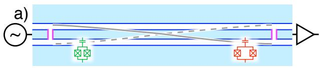
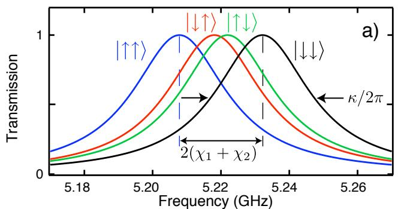
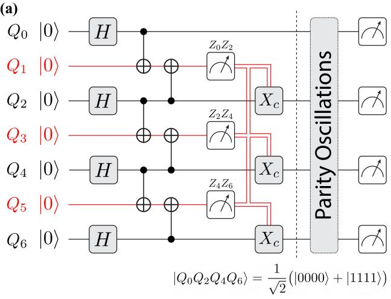
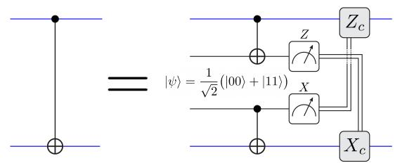
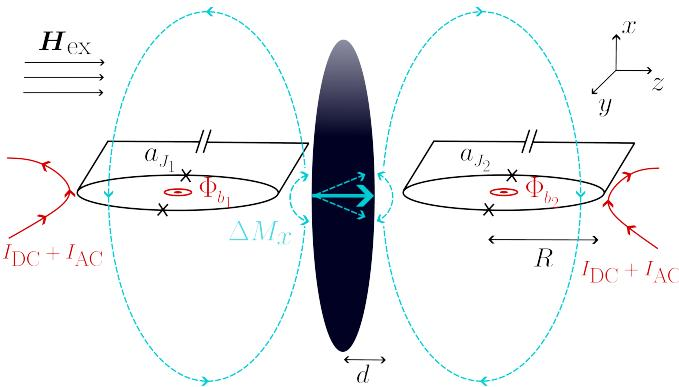
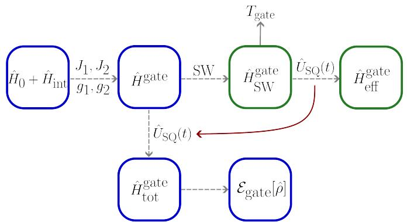

物理图像
在电路量子电动力学中，微波谐振腔的中心导体可同时伸出多根电极，每根电极与一个双量子点或量子点阵列电容耦合。一个腔模覆盖整个芯片，相距百微米乃至毫米的电荷比特、单自旋量子比特、共振交换量子比特或翻转模式比特可以共享这一模式作为”量子总线”（quantum bus）。本站把这一总线的角色称为”在远距离节点间高效传递量子信息”。
腔介导耦合（cavity-mediated coupling）与近邻耦合的差别有两点：
- 作用范围：直接交换作用（交换相互作用）和隧穿耦合随距离指数衰减，只在百纳米量级有效；腔模覆盖整个芯片长度，对所有挂在同一总线上的比特提供等价的耦合；
- 媒介与可控性：交换作用由栅压或磁场直接控制，腔介导耦合则由比特–腔失谐 、耦合强度 与腔耗散 共同决定，色散极限下还可以有目的地打开或关闭。
腔的总线功能既包含相干交换——即激发从一个比特经腔到达另一个比特，又包含”集体”行为——多个比特共同调制腔响应，使腔作为它们整体的多比特探针。本词条按耦合机制（共振区 vs 色散区）与比特数（两比特 vs 多比特）两条线索展开。
理论模型
两比特 + 单模：Tavis–Cummings 哈密顿量
当 个二能级比特共享一个单腔模，且满足旋转波近似（RWA）条件 、 时，Jaynes–Cummings 哈密顿量的自然推广是 Tavis–Cummings 哈密顿量（TC 模型， 式 5.1）：
其中 、 为腔光子湮灭、产生算符，、 为第 个比特的泡利与升降算符。模型的关键特性：
- 总激发数守恒：RWA 后 与 对易，希尔伯特空间按激发数分解为相互独立的小子空间；
- 集体耦合增强：当所有比特调至与腔共振 时，低激发子空间的本征态为集体模式 （“暗态”）与 。以两比特为例（ 式 3.2–3.3； 式 5.2–5.3）
其中 称为集体增强耦合速率（collectively enhanced coupling rate）。暗态 不含光子成分、与腔的偶极矩阵元为零，无法从基态 经单光子过程达到；而 之间的能级间距即增强真空 Rabi 劈裂，大小为 。这一增强反映了多个比特共同与光子耦合时，比单比特真空 Rabi 劈裂 更大的能级分裂。
色散极限：虚光子交换的有效相互作用
实用方案中比特常远离共振，以减小 引起的退相干与不必要的光子泄漏。设所有比特失谐 都远大于 且 ，以 为小量对 TC 哈密顿量做二阶 Schrieffer–Wolff 变换，腔模可绝热消去，得到比特间的有效相互作用（见 JC 模型词条”色散极限”一节）
其中 是与配置相关的平均失谐（典型情形下各比特近似相等时 ）。两比特最简形式给出与多个后续论文（；）都使用的标度律
它就是站名”腔介导远程耦合”的核心物理：有效交换率随两个比特各自单光子耦合强度 增大而增大，随比特–腔失谐 增大而减小。 同时伴随每比特频率的色散频移 ，相当于对每个比特施加一个状态依赖的 ac Stark 偏移（详见 JC 模型词条）。
对真实的两比特系统，若它们的失谐不相等， 仍可写为（参见 jaynes-cummings-model 一节）
不同失谐下的有效耦合强度不同，这一不对称为多比特同时调谐带来实际工程问题。
多比特与集体响应： 比特集体微波响应
把比特数 推到两个以上，共振腔不再只有”两比特交换”这一种可观测量；比特系综对腔的整体响应成为新的诊断。 把 个比特同时耦合到同一腔模时腔的反射式散射矩阵推广为
其中 是第 个比特的极化率。集体微波响应即 项：比特系综的影响按线性叠加进入分母。当 时腔响应可线性展开，相位响应也满足 ，这就是线性区；当 增大并越过 ，比特不再彼此独立地扰动腔，集体相位响应进入非线性区，每个比特感受到的有效耦合被其它比特的存在所改写。这一从线性到非线性的过渡可用于定量提取系综的整体协同性 ，见 强耦合词条。
共振交换比特与腔的耦合
把共振交换比特（RX 比特）编码进三量子点（、 是 Hubbard 哈密顿量最低的两个本征态）后，腔场以三量子点电荷总数算符
作用在系统上（ 式 6.28）。固定总电子数为 3，可重新整理为 ，其中 。在 RWA 下变换到 RX 本征基，得到
耦合强度 与电荷–腔全局耦合 的关系是（ 式 6.31–6.33）
其中展开系数 表示 RX 比特态中第 个量子点电荷态 、 的权重。RX 比特靠近电荷反交叉区（），与电荷态耦合强，因此电偶极矩大、对腔的耦合 也显著大于纯自旋比特的 ，是构建”可电学调频 + 与腔强耦合”比特的有力候选。两种极限下的简化：
- ，：
- ，：。
这两式定量地把”频率电学可调”与”与腔强耦合”两条特性同时给出。
增强耦合与等效耦合的区分
注意区分增强真空 Rabi 劈裂对应的耦合 （共振区）和色散极限有效交换 （色散区）：
- 前者出现在能级直接可分辨的强耦合实验中，由本征态叠加直接读出；
- 后者描述的是绝热消去腔模后的比特间相互作用强度，控制两比特门的演化速度。
在 的两比特电荷比特实验中，两个比特都满足强耦合条件 ，单比特耦合分别为 、；把两个比特都调至 ，观测到的增强真空 Rabi 劈裂为 ，与 高度一致（ pp. 67–69）。这表明两比特确实是以腔内光子为媒介实现了远程相干耦合——而不是经由电极之间的杂散电容或直接库仑相互作用。

腔总线实验的器件结构：两个磁通可调的电荷比特（SC loop qubits）电容耦合到同一 CPW 谐振腔（transmission line resonator）——腔作为”总线”分配量子信息，使任意远程比特对之间都能相干耦合。图源：Sillanpää et al. (2007)，Fig. 1。
虚光子交换的有效交换强度：色散极限（两比特都与腔大失谐）下绝热消去腔模，比特间获得横场交换相互作用
其中 是两比特与腔的失谐、 是各自的单比特-腔耦合（由真空 Rabi 劈裂标定）。实验通过把比特经 （腔内单个虚光子）交换到 观测这一交换——Sillanpää 等人据此首次演示了任意远程比特对的腔总线耦合。

腔总线的透射谱学证据：扫描比特磁通调谐其频率经过腔共振，透射谱在简并点出现真空 Rabi 劈裂——每个比特与腔的简并都可单独观测，两比特同调谐时给出增强劈裂。图源：Sillanpää et al. (2007)，Fig. 3。

反馈辅助的多方纠缠生成：腔总线连接的非局域比特网络——测量反馈实时修正脉冲，纠缠生成效率超过无反馈协议。图源：Hashim et al. (2024)，Fig. 1。

多方纠缠的保真度：反馈协议与无反馈基准的对比——纠缠质量与生成速度同时提升。图源：Hashim et al. (2024)，Fig. 2。
磁振子介导的门是总线介质家族的扩展：磁性晶体（如 YIG）的磁振子模式作为玻色介质——比特-磁振子-比特的有效耦合产生量子门，与光子总线（本词条主体）平行。磁振子的优势在于与微波腔强耦合、模式丰富（多模复用潜力），理论方案给出磁振子介导的两比特门条件。

磁振子介导量子门：比特-磁振子-比特的耦合构型——总线介质家族的磁振子分支。图源：Dols et al. (2024)，Fig. 1。

磁振子门的参数条件：门保真度随耦合参数的窗口。图源：Dols et al. (2024)，Fig. 2。
参数与量级
下表汇总本站论文中报道的腔介导耦合实验参数与提取结果：
| 参数 | 实验 1 | 实验 2 | 实验 3 |
|---|---|---|---|
| 比特类型 | 双量子点电荷比特 ×2 | 双量子点电荷比特 ×2 | 翻转模式自旋比特 ×2 |
| 腔型 | 双端口 CPW 透射腔 | 双端口 CPW 透射腔 | NbTiN 高阻抗反射腔 |
| 腔频 | 6.53 GHz | 6.0 GHz | GHz |
| 腔耗散 | MHz（ MHz 量级） | — | MHz（RDQD） / 6.8 MHz（LDQD） |
| 单比特耦合 | , MHz | MHz（Wallraff 参数） | MHz（RDQD）/ 27.6 MHz（LDQD） |
| 单比特退相干 | 65 / 55 MHz | — | 4.6 / 2.2 MHz |
| 集体/增强耦合 | MHz | MHz | 强耦合进入 |
| 数据来源 | pp. 67–69 | p. 64 | pp. 61–63 |
| 多比特扩展 | 比特数 | 单比特 | 协同性 | 来源 | ||
|---|---|---|---|---|---|---|
| NbTiN 高阻抗腔 + 5 个 DQD | 6.48 GHz | 5 个电荷比特 | 拟合值 55、18、28、55 MHz | （线性区极限） | pp. 78–88 | |
| SQUID 阵列反射腔 + 2 个 DQD | 6.0 GHz | 2 个电荷比特 | MHz | — | p. 64 | |
| Si/SiGe 三量子点 + 高阻抗腔 | 4.993 / 7.332 GHz | 2.5–3.5 kΩ | 1 RX 比特、2 个不同位置翻转模式比特 | 最大 43.5 MHz | pp. 56–63, 89–102 |
上表还揭示两个工程经验：
- 增强耦合 的可分辨性依赖集体增强，而不是单个 的大小。当两个比特都满足强耦合条件时， 直接反映在劈裂宽度上；
- 协同性 是衡量系综是否能进入非线性集体响应的关键参数。 用 5 个电荷比特同时挂在 NbTiN 高阻抗腔上得到 ，集体相位响应进入非线性区（ 处开始明显），这就是利用集体耦合”探测–表征”多比特系统的能力。
实验特征与测量
增强真空 Rabi 劈裂
把两个比特都调至 ，然后扫描探测频率 （与失谐量 ）记录 ，在两个比特与光子都共振的频率上原本的 单比特劈裂扩大为 ，并在中心处出现一个因暗态 不可达而消失的中线（ 式 3.2–3.3； 图 5.6）。这是远程相干耦合最直接的指纹。
两比特关联谱
固定 而把两个比特的失谐量 同时作为扫描轴，腔响应 在 平面上呈现十字、井、双峰、嵌套等多种几何（ 图 5.9，pp. 70–71）。其散射矩阵为
四个典型模式由 与 的相对大小决定：
- ：两比特都高于腔频，腔响应为单峰十字图案，色散响应近似线性叠加；
- 而 ：比特 2 共振、比特 1 在大失谐端，图案由单峰变为沿 对称的双峰，比特 1 的远端影响由 修饰演化；
- 接近但都高于 ：出现嵌套型曲线，比特之间的相互作用清晰可见；
- 两比特都低于 ：类似情形，耦合强度提取更为准确。
这种二维扫描是判断”两比特是否经腔而非杂散电容相互作用”的有效工具：杂散电容的串扰可通过 强耦合词条描述的辅助测量来排除， p. 65 报告当采用远离耦合电极的栅极对进行失谐量控制时，杂散电容耦合 量级，可以忽略。
集体微波响应的线性–非线性过渡
多个比特同时挂在同一腔上时（ 第 6 章），集体响应 的增大使分母中的腔光子寿命相对变短，相位响应进入非线性。这一过渡在数据上以”最大相位响应 vs 累加线性估计 “曲线的明显偏离呈现，对应 的位置（ 图 6.7）。这一现象本身即可作为集体高协同性 的实验指纹，而无需逐比特地把它们都调到共振。
比特与腔无直接电极连接：扩展到任意位置
在 Si/SiGe 三量子点中实现了一个特别的扩展：在三量子点的两端（RDQD、LDQD）分别编码翻转模式自旋比特，LDQD 的所有电极都不与谐振腔直接相连——RDQD 的电极把 RDQD 中的比特与腔耦合，LDQD 中的比特则通过与 RDQD 之间的电荷耦合（量子点间隧穿）以及 RDQD–腔的耦合链路，最终通过腔响应被读出（ pp. 56–63）。LDQD 的强耦合参数为 ，，——仍然满足 。这一结果直接证明谐振腔可耦合”更远距离的量子比特”，对大规模扩展有重要意义。
色散读出与量子非破坏测量
色散极限下比特与腔的耦合被”凝固”为状态依赖的腔频移 （详见 色散读出）。这一频移的集体贡献在多比特情形下变为 ，即可作为多比特状态的腔介导读出手段——只要 ，不同比特态组合在腔谱上可以分辨。
失谐不一致时的标度律
实际器件中两个比特往往不可能都恰好调在与腔相同频率。设 ，有效交换为
即有效耦合随两个失谐的调和均值倒数缩放—— 较大的比特（远离腔）对 的贡献会被 较小的一侧主导。这一点在 的 RX 比特设计中得到利用：通过 、 两个失谐参量在电学上独立调节 RX 比特的频率与电偶极权重，从而在保持 不变的前提下改变比特–腔失谐。
扩展能力与代价
腔总线带来的不只是”远程耦合”——它同时引入若干新的工程问题：
- 集体衰减与频率拥挤：腔的耗散 直接耦合到所有挂在它上面的比特，任何一个比特的纯态操作都会把腔频移动 ；两个比特靠近时它们的色散响应区会重叠，造成频率拥挤。 p. 82 报告 5 比特同时接近共振时工作点会持续漂移，因此被迫放弃把 5 个比特同时调到共振，改用多比特关联谱作诊断；
- 残余 ZZ 耦合与状态相关频移：除主项 之外，色散极限还会引入 形式的耦合（即所谓 ZZ 耦合），表现为两比特各自频率被对方状态微小修正。这一效应在比特数增多时迅速扩大，可能超过量子门保真度容差（超导可调耦合器架构中 ZZ 的完整机制分解与”误差源↔门资源”双重身份见ZZ 相互作用词条）；
- 校准与控制复杂度：多比特共享同一总线，每个比特的失谐独立可调但色散响应相互纠缠， 后腔响应的拟合需要把多个比特的耦合强度与失谐同时作为参数。这是 强耦合词条所描述的”高协同性”体系的代价；
- “连得上”≠“并行运行”：比特数增多并不自动意味着可并行操控比特频率。要实现可独立寻址的并行门，要么为每个比特配置独立的微磁体或局部磁场，要么为每个比特配置独立的局部总线（如 SQUID 阵列腔可在不同频率区域提供多模总线，见 SQUID 阵列谐振腔）。
反过来，腔总线带来的额外收益同样显著：
- 远距离相干耦合：跨越芯片乃至模块，绕开近邻交换作用百纳米量级的距离限制；
- 多比特集体诊断：通过 一次性读出多个比特的耦合强度与失谐，而不必逐个比特单独表征；
- 频分复用：利用腔的高阶模式或多模腔（SQUID 阵列腔、NbTiN 多模腔）为不同比特分配独立通道，SQUID 阵列谐振腔词条有详细描述；
- 电学可调比特的支持：共振交换量子比特通过栅极调节 、 改变比特频率但保持 较大，可由同一总线接口；
与其他概念的关系
- 电路量子电动力学是腔介导耦合所在的基本框架；最小二能级模型见 Jaynes–Cummings 模型；多比特推广即 Tavis–Cummings 哈密顿量（见本文）。共振极限的标志是 真空 Rabi 劈裂 与 强耦合判据；色散极限支撑 色散读出 与 QND 测量。
- 微波谐振腔提供总线载体；常规阻抗 CPW 腔适合弱耦合探测，提升耦合则依赖 高阻抗谐振腔（NbTiN、TiN、SQUID 阵列），后者正是 与 实现 与 的关键。SQUID 阵列谐振腔则提供可调频与多模支持。
- 比特侧的通道由 电荷–光子耦合（强偶极、快速退相干）与 自旋–光子耦合（微磁体梯度、自旋轨道、翻转模式）决定；翻转模式比特 与 共振交换量子比特 都是为兼顾”电学可调 + 与腔强耦合”而提出的编码。
- 近邻作用的对照：交换相互作用、隧穿耦合与 CNOT 门通过直接相互作用实现，工作距离百纳米；腔介导耦合通过共享模式跨越芯片尺度。当阵列规模超过几个比特时，两者通常混合使用：节点内用近邻，节点间用腔总线。
- 性能瓶颈：电荷噪声仍是色散频移 与有效交换 稳定性的主要限制；不同平台（GaAs/AlGaAs、Si/SiGe、Si-MOS、锗棚顶纳米线）在退相干和电荷噪声量级上各有差异。
参考文献
- Deng, X., Zheng, W., Liao, X., Zhou, H., Ge, Y. et al. Long-Range Interaction via Resonator-Induced Phase in Superconducting Qubits. Physical Review Letters 134, 020801 (2025). DOI: 10.1103/physrevlett.134.020801；arXiv:2408.16617（QAtlas 缓存：2408.16617）。
- 可调耦合器架构中静态 ZZ 的机制分解：Fors, S. P., Fernández-Pendás, J., Frisk Kockum, A. (2024). arXiv:2408.15402，见ZZ 相互作用词条。